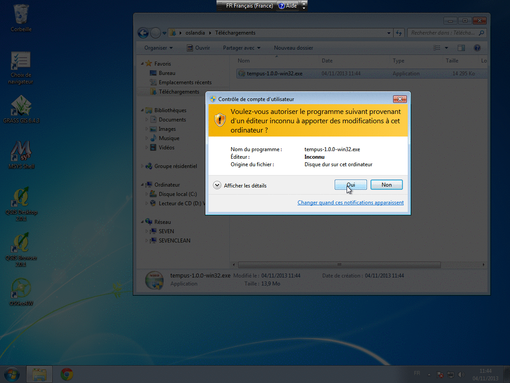

Dependencies
Tempus depends on the following third party libraries:
- boost: timer, system, unit_test_framework, thread and program_options. Version 1.49 works OK on a recent Ubuntu box, consider using version 1.53 for Windows compilation with Visual Studio 2008
- PostgreSQL
- PostGIS 2.x
- LibXML2 for the WPS server
- iconv
- shapelib for osm2shp
- FastCGI for the WPS server
- QGIS 2.x
- PyQT for QGIS plugins
On Ubuntu
On an Ubuntu system, dependencies correspond to the following packages :
nginx postgresql postgresql-server-dev-9.1 libpq-dev libgeos-dev g++ libboost-all-dev libglib2.0-dev libfcgi-dev libshp-dev libxml2-dev cmake cmake-curses-gui pyqt4-dev-tools libtool libproj-dev libgdal-dev
PostGIS 2.x is not yet packaged for Ubuntu, so you would have to download, compile and install it.
Compilation
In the root directory, create a build directory and enter it. Then use a CMake configuration interface (ccmake for instance or cmake-gui on Windows)
ccmake ..
You can launch make install (usually as root, with 'sudo' under Ubuntu) to install everything.
Another step is needed if you choose to build QGIS plugins and want them to be installed for the current user. From the install directory, run install-qgis-plugins.sh on Linux and install_qgis_plugins.bat on Windows.
Have a look at script/install-tempus-ubuntu.sh for the installation process on an Ubuntu system.
Build options (cmake options)
| Option Name | Default | Description |
|---|---|---|
| CMAKE_INSTALL_PREFIX | /usr/local | Specifies where Tempus will be installed when make install is invoked |
| CMAKE_BUILD_TYPE | Switches between a Release build, specially crafted for speed efficiency and a Debug build, specifically crafted for development. |
|
| BUILD_CORE | ON | Whether to build the core or not (needed) |
| BUILD_INTRALYS_PLUGIN | ON | Whether to build the Intralys QGIS plugin |
| BUILD_QGIS_PLUGIN | ON | Whether to build the routing QGIS plugin or not |
| BUILD_TEMPUS_PLUGINS | ON | Whether to build the sample routing plugins or not |
| BUILD_TESTS | ON | Set to ON to compile unit tests |
| BUILD_WPS | ON | Set to ON to compile the WPS server. |
On Windows
A Windows installer is provided. It will handle the installation of every Tempus components, including PostgreSQL/PostGIS and QGIS if needed.
(Source images of the animation)
If you want to compile Tempus from sources and setup a build environment on Windows, refer to this README file.
Test database creation
You can test the installation by running some unit tests. They need a test database. The needed steps to build it are :
- Create a postgreSQL database
tempus_test_db - Install PostGIS on it (
CREATE EXTENSION postgis;) - Populate it with the Tempus schema and test data:
psql tempus_test_db < data/tempus_test_db.sql
QGIS Plugin installation
Just type nmake install (Windows) or make install (Linux) and it should install the plugin and all required dependencies to your local qgis plugin directory (Under Linux, you will need to launch sh /usr/local/share/tempus/install-qgis-plugins.sh after the installation)
When QGIs is launched, go to the "Extension management" dialog, look for "ifsttar routing plugin" and enable it.
Server installation
The idea is to use the standalone mode of the WPS server and an httpd server (like nginx or Apache2) that just "passes" execution to this executable.
You have to launch the "wps" executable from a command line, for example like this:
hme@socompa:~/build$ TEMPUS_DATA_DIRECTORY=../data/ ./bin/wps -c ./lib -p 9000 -l sample_multi_plugin -l sample_pt_plugin -l sample_road_plugin -t 4
Options used:
- -c ./lib: will start the server in the given directory, where plugins (.so files) are located
- -l plugin: will load the given plugin
- -t 4: number of threads to use for parallel request handling
- The option -d "options" would also allow to specify how to connect to the underlying database (default to "dbname=tempus_test_db").
This will create a listening socket on port 9000 and start a WPS server. This way, you can see debugging outputs.
The WPS server also has a "daemon" mode. Refer to the file script/wps_daemon for an example of use on Linux. The Windows installer comes with a service wrapper.
Apache configuration
Download apache2 and mod_fastcgi or install package libapache2-mod-fastcgi (Ubuntu).
After installation, within the Apache2 configuration directory (/etc/apache2 under Linux), check that the fastcgi module is correctly loaded. A link to mods-available/mod_fastcgi.conf must exist in mods-enabled.
Then this file must have the following first line :
FastCgiExternalServer /var/www/wps -host 127.0.0.1:9000
Restart the Apache server. You can now test the WPS installation with a browser pointing to http://127.0.0.1/wps?service=wps&version=1.0.0&request=GetCapabilities
nginx configuration
On Windows, nginx can be downloaded from http://nginx.org/en/download.html. Just unzip it wherever you like. On Ubuntu you can install the package nginx.
You can now configure nginx, by adding the following lines inside the server {...} configuration part of nginx.conf (/etc/nginx/sites-available/default on Ubuntu)
location /wps {
include fastcgi_params;
fastcgi_pass 127.0.0.1:9000;
}
nginx has normally to be launched only once.
Unit tests
You can test your installation by running some unit tests. Within the build directory, you can run ctest in order to test the core components. Example of output:
~/src/TempusV2/build$ ctest
Test project /home/hme/src/TempusV2/build
Start 1: test_core
1/3 Test #1: test_core ........................ Passed 8.00 sec
Start 2: test_osm2shp
2/3 Test #2: test_osm2shp ..................... Passed 0.06 sec
Start 3: test_osm2shp++
3/3 Test #3: test_osm2shp++ ................... Passed 0.08 sec
100% tests passed, 0 tests failed out of 3
Total Test time (real) = 8.15 sec
In order to test the WPS and Python parts, you can run the Python script test_wps.py (a WPS with all the sample plugins loaded must be available on 127.0.0.1/wps). Example of output:
~/src/TempusV2/src/tests$ python test_wps.py ........ ---------------------------------------------------------------------- Ran 8 tests in 3.497s OK